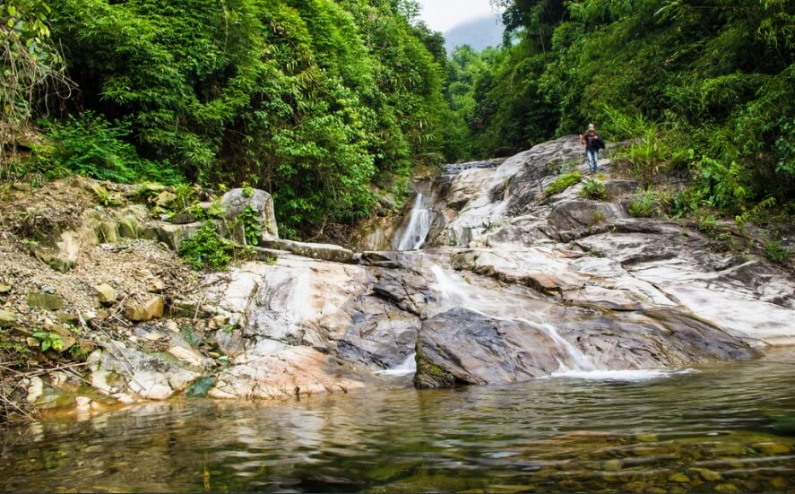

Đát Đắng thuộc xã Phú Xuyên, huyện Đại Từ, tỉnh Thái Nguyên. Từ trung tâm thành phố Thái Nguyên theo quốc lộ 37 nối giữa Thái Nguyên và Tuyên Quang du khách mất khoảng một giờ đồng hồ đi xe máy đến xã Phú Xuyên rồi đi tiếp hơn 2 km đường mòn chạy tới gần chân đát. Sau khi gửi xe và bách bộ khoảng 2 km băng qua những con suối, những bãi đá lởm chởm, những ngọn đồi xanh cỏ, thác Đát Đắng hiện ra tầng tầng, lớp lớp chắc chắn sẽ không phụ công sức của những vị khách đam mê du lịch và khám phá.
Đát Đắng khá xa đường quốc lộ, chính vì thế mà điểm hấp dẫn của nơi này chính là cảm giác được hòa mình vào thiên nhiên, được đắm chìm trong những cánh rừng nguyên sinh xanh mướt, trong một bầu không khí trong lành, mát mẻ, và những dòng thác tuôn chảy.
Muốn vào Đát Đắng du khách phải đi bộ luồn qua những rặng nứa gần sát mặt đất, có những đoạn du khách phải leo qua những con đường mòn vắt ngang sườn núi, nhưng thành quả có được là một phong cảnh bao la xanh mướt hiện ra trước mắt, những thảm cỏ xanh non mọc tự nhiên, nơi đây như một chiếu nghỉ dừng chân cho du khách sau quãng đường leo dốc khá mệt mỏi. Nằm trên cỏ, nhắm mắt lại và hít một hơi thật căng lồng ngực để cảm nhận mùi vị đặc trưng của núi rừng, cái cảm giác trong lành, yên ả lâu lâu mới gặp, nghe những âm thanh vừa quen vừa lạ, mở mắt ra là tất cả mây trời. Đứng ở đây, du khách có thể phóng tầm mắt ra xa nhìn ngắm thiên nhiên hoang sơ nhưng đẹp lạ thường. Màu xanh bao la. Điểm đâu đó là màu đỏ, vàng của hoa chuối rừng. Hoa thiều đất đỏ rực dưới chân, tưởng chừng như những bông hoa đó ngoi lên từ lòng đất, du khách sẽ có cảm giác thật thư thái, tâm hồn như hòa nhịp với thiên nhiên.
Sau một đoạn đường leo đồi vượt suối, du khách đã tới được điểm đầu tiên của Đát Đắng. Cảnh tượng hiện ra trước mắt là những dòng thác bạc thi nhau đổ xuống, bọt tung trắng xóa, nhưng đây mới chỉ là tầng một, tầng thấp nhất của Đát. Đát Đắng có 11 tầng, các tầng nối tiếp nhau và cao dần như những bậc thang. Nhiệt độ trong Đát khá mát mẻ, lúc nào cũng thấp hơn nhiệt độ bên ngoài khoảng 4 đến 50C. Vào mùa hè Đát Đắng đón rất nhiều đoàn du khách đông như trảy hội, đặc biệt là các bạn học sinh, sinh viên ưa thích thiên nhiên và khám phá.
Vào Đát Đắng ta như lạc vào một không gian hoàn toàn mới, thoát khỏi cái ồn ã, xô bồ nơi phố thị, hít thở không khí trong lành và cảm nhận âm thanh núi rừng đang ở quanh ta, hòa với ta. Dòng thác từ trên cao đổ xuống bọt tung trắng xóa, luồn qua những khe đá tai mèo rồi đổ xuống những hủng sâu. Nước từ trong khe núi chảy ra trong vắt, mát lạnh, giữa cái thời tiết oi ả, chói chang của mùa hè mà được ngâm mình trong dòng thác trong veo thì không gì thú vị bằng.
Đi tiếp lên cao là đát 2, đát 3, rồi đến đát 11, các đát nối tiếp nhau cao dần, mỗi đát lại có một vẻ đẹp riêng, càng đi du khách càng thấy thú vị. Càng lên cao nhiệt độ càng mát mẻ, không khí càng trong lành.
Ra về, trong lòng ai cũng nuối tiếc. Thác Đát Đắng là một trong những nơi đáng để chúng ta dừng chân ngắm cảnh, đặc biệt là những bạn trẻ ưa thích mạo hiểm và đi phượt. Mong một ngày nào đó quay trở lại Đát Đắng.
Xe máy: Nếu muốn đi phượt thác Mưa Rơi thì xe máy là phương tiện bạn nên chọn. Chọn xe máy di chuyển bạn sẽ được chủ động về mặt thời gian hơn, có thể dừng lại bất cứ đâu mà bạn thấy đẹp để ngắm cảnh và lưu giữ khoảnh khắc tuyệt vời đó! Đây là điều mà chỉ đi xe máy mới có thể trải nghiệm được.
Cung đường di chuyển cụ thể như sau: Xuất phát từ Hà Nội, du khách di chuyển theo hướng sân bay Nội Bài, rồi rẽ phải đi cao tốc Bắc Ninh. Tiếp đó chạy tiếp 8km là tới địa phận của thành phố Thái Nguyên.
Xe khách: Hằng ngày tại bến xe Mỹ Đình, Giáp Bát, Lương Yên đều có rất nhiều hãng xe chạy tuyến Hà Nội - Thái Nguyên cho bạn tha hồ lựa chọn. Tùy theo chất lượng của xe mà giá sẽ dao động từ 70-150k/chiều.